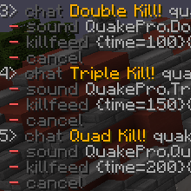
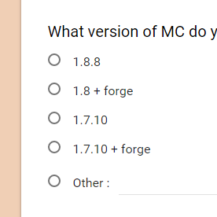

Learn how to use Chat Triggers
Chat Triggers is 100% customizable but takes a little bit of setting up. Check out all of the cool things you can do with Chat triggers by learning more.
Learn more
Chat Triggers is 100% customizable but takes a little bit of setting up. Check out all of the cool things you can do with Chat triggers by learning more.
Learn more
Chat Triggers is currently in BETA and I need YOU to help me test it. Get a hands on look at the mod with the developers and learn all of the cool things it can do before it comes out.
Sign up